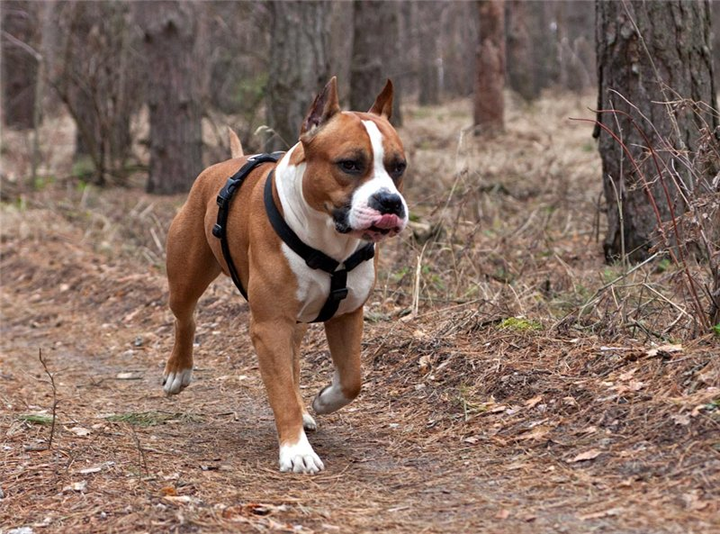
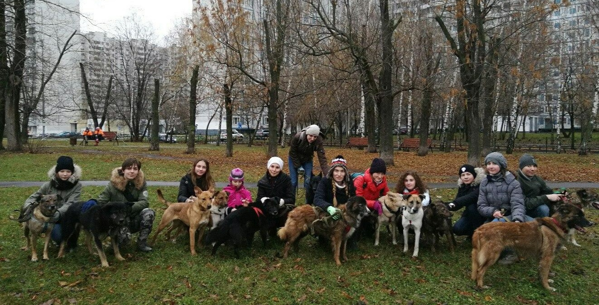

Мы не рекламируем различные организации. Информация представлена в виде справочника для получения дополнительной информации.
Проблема брошенных животных существует уже не одно столетие. Бездомные звери в городах стали восприниматься как угроза общественному спокойствию и здоровью, и тогда их начали изолировать, а затем, уничтожать. Ситуация изменилась с появлением приютов: многие животные получили шанс обрести дом или хотя бы временную передержку. Считается, что первый в мире приют для бездомных животных появился еще в XVII веке в Японии.Кстати, незадолго до создания приюта правитель составил важный законодательный акт. В историю он вошел как указ «О запрете лишения живых существ жизни». Суровое наказание вплоть до смертной казни ждало каждого, кто посмеет обидеть собаку, кошку, лошадь и некоторых других животных. Если человек был замечен за жестоким обращением с питомцем, к нему могли применить силу стражи порядка.После смерти японского правителя его принципы на долгие годы были забыты, и отношение к бездомным животным в целом оставляло желать лучшего.
Миссия современных приютов в том, чтобы заботиться о найденных животных, искать им подходящую семью или вернуть в привычную среду обитания после проведения стерилизации. В последнем случае животное больше не сможет давать потомство, и популяция бездомных сократится. Кроме того, теперь сотрудников приютов все чаще волнует не только физическое, но и ментальное здоровье их четвероногих подопечных. Здесь на помощь приходят зоопсихологи, задача которых состоит в адаптации бездомных зверей к новым условиям и решении поведенческих проблем.
Как появился приют Дино

История создания приюта связана с породистым стаффордширским терьером Дино. Его прежние хозяева продали дом и оставили пса новым владельцам. Новые хозяева такому «бонусу» в виде собаки бойцовской породы не обрадовались. Они заперли его в подвале, без еды и воды. Через какое-то время пса случайно обнаружили соседи и сообщили волонтерам. Когда волонёры достали Дино из подвала, он был в крайне истощенном состоянии, частично облысел в результате обезвоживания, глаза слезились от дневного света. Его откормили и привели в порядок.
Но найти хозяина для взрослой собаки серьезной породы оказалось проблематично. Собака была отправлена на платную передержку. В течение полугода, на собранные деньги был построен приют, в котором Дино оказался первым постояльцем. По истичению трёх лет Дино обрёл нового ответственного хозяина. Он был самым знаменитым псом: о нём писали и снимали сюжеты, писали в СМИ местного и федирального уровня. Его история просто удивляет. Из жалкого заморенного голодом существа он превратился в красивого и доброго пса, не утратившего веру в людей. Люди, конечно, звонили. Но чтобы вы понимали, как обстояли дела, расскажу один случай. Звонила женщина, говорит: «Ой, знаете, мы читали статью про него, мы плакали так, хотим его взять к себе, только у нас есть собачка, мы сначала ее отдадим, а его возьмем». Как выяснилось, собачка эта прожила у хозяев шесть лет, а они вот так просто от нее готовы были избавиться. Это вызывает сомнения.
В чём состоит сложность содержать прирют?

Есть ли помощь от администрации?
Организация никак не помогает с финансами или с работниками. Как говорилось ранее в приюте работают толлько волонтёры, и людей не хватает как и места.
Помощь приюту
Важна любая помощь. Не можете что-то купить, приезжайте и погуляйте с собаками. Собаки существа социальные, они нуждаются в общении. Прогулка с людьми для них – это всегда радостное, долгожданное событие. На 170 собак в приюте всего два сотрудника. Они просто физически не в состоянии всех выгулять. Когда чистят вольеры, на недолгую прогулку выпускают постояльцев приюта в общий периметр, огражденный забором. Хотя приют находится за Волгой, там места гуляй – не хочу, и дубовая роща рядом. Еще мы проводим «Дни волонтера», в рамках которых приглашаем всех желающих прогуляться с собачками.

Ссылки на страницы в ВК приютов в Белгороде.